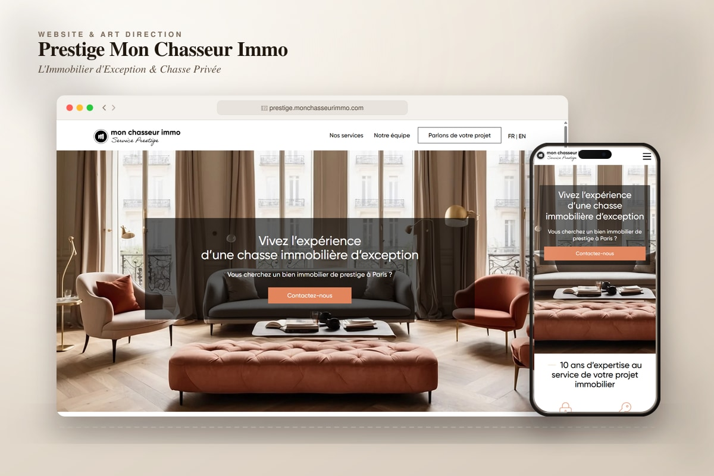
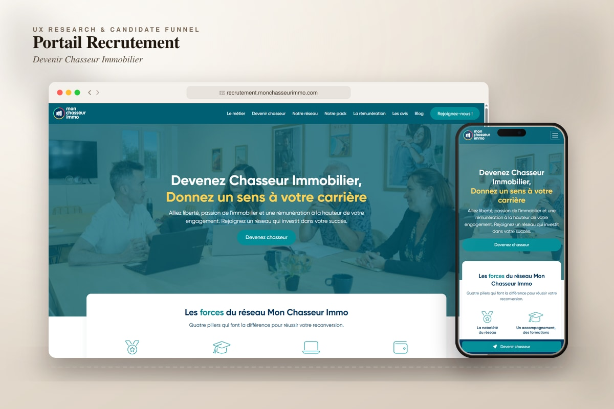
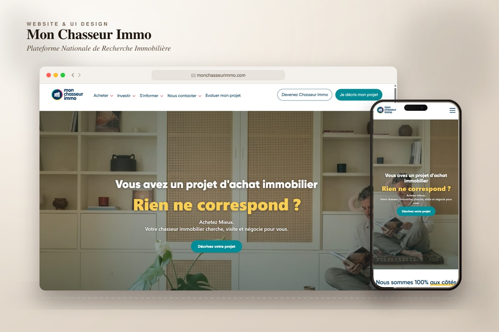
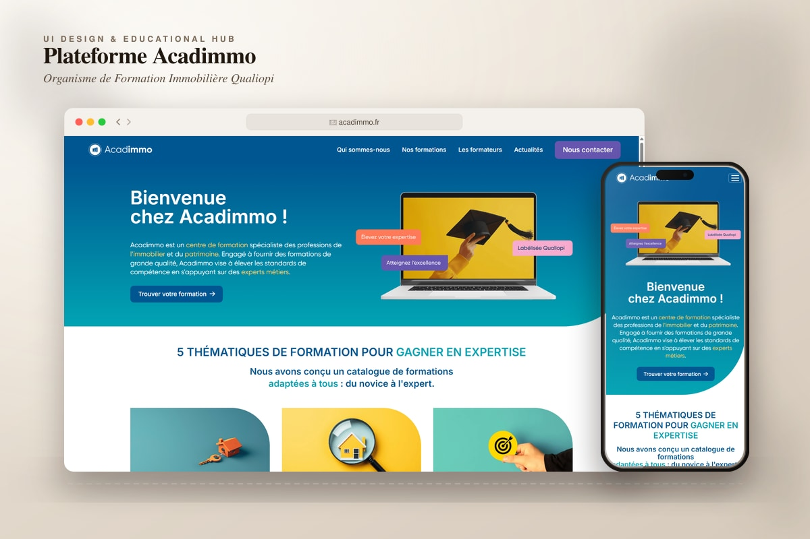
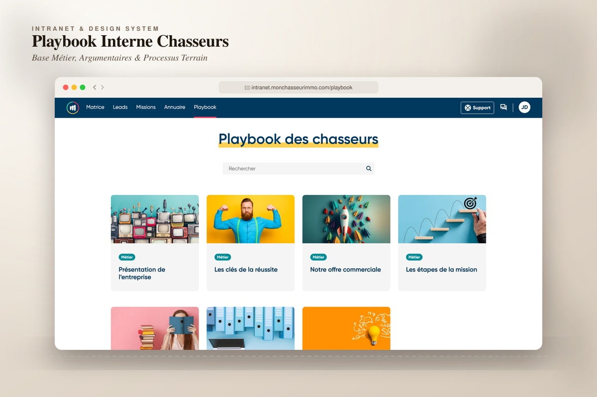
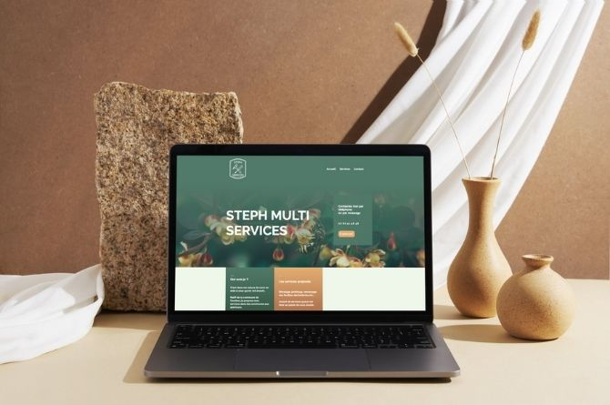
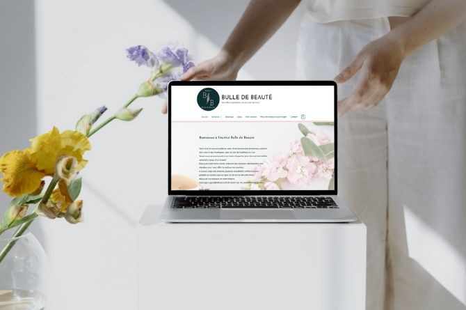
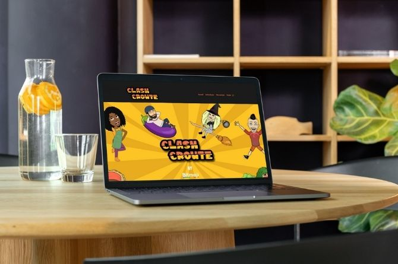

Mon parcours
Intégratrice web & UI Designer
Juin 2022 - Aujourd'hui | MontpellierActuellement en poste chez Mon Chasseur Immo, où je combine mes compétences en intégration web et en design pour créer des interfaces utilisateurs intuitives et esthétiques
Web Designer
Février 2022 - Mars 2022 | MontpellierStage en tant que Web Designer chez Teads, où j'ai appris à concevoir des sites web interactifs tout en respectant l'identité visuelle et les besoins du client
Graphic Designer
Janvier 2021 - Février 2021 | MontpellierJ'ai travaillé en tant que Graphic Designer pendant deux mois, en me concentrant sur la création d'éléments visuels attractifs et cohérents pour des projets variés
Assistante de direction - Institut
Juin 2015 - Juin 2019 | CanadaEn tant qu'assistante de direction dans un institut esthétique, j'ai développé des compétences organisationnelles et de gestion, tout en étant impliquée dans les activités administratives de l'entreprise
Assistante de direction - Institut
Juin 2015 - Juin 2019 | BordeauxJ'ai assumé des fonctions administratives et de gestion dans un institut de beauté, contribuant à l'organisation et au bon déroulement des activités quotidiennes
Mes projets
Les créations de sites internet

Site prestige
J'ai conçu Prestige Mon Chasseur Immo, une plateforme d'immobilier haut de gamme au design élégant et à l'expérience utilisateur fluide. Le site présente des propriétés exclusives avec des fonctionnalités avancées pour faciliter leur acquisition, offrant ainsi un espace en ligne reflétant luxe et excellence pour une clientèle exigeante.

Site recrutement Mon Chasseur Immo
J'ai conçu le site de recrutement pour Mon Chasseur Immo, une plateforme immobilière au design moderne et à l'expérience intuitive. Le site facilite la navigation des candidats et la découverte d'opportunités de carrière, tout en reflétant l'identité et les valeurs de la marque.

Site Mon Chasseur Immo
J'ai entièrement redesigné Mon Chasseur Immo, une plateforme immobilière au design moderne et à l'expérience utilisateur optimisée. Le site offre une navigation intuitive pour découvrir aisément les services, tout en reflétant fidèlement les valeurs de la marque.

Site acadimmo
J'ai créé Acadimmo, une plateforme de formation en immobilier au design moderne et à l'expérience intuitive. Elle offre un espace éducatif attrayant et accessible, reflétant l'identité de la marque.

Site playbook - interne mci
J'ai développé le Site Playbook - Interne MCI, un outil regroupant les informations essentielles pour les chasseurs immobiliers. Cette plateforme fonctionnelle facilite l'accès aux ressources indispensables et améliore l'efficacité du réseau.

Site steph multi-services
J'ai créé Steph Multi-Services, une landing page valorisant les services d'un artisan polyvalent. Le site présente son travail de manière attrayante et facilite la prise de contact avec les clients.

Site bulle de beauté
J'ai réalisé Bulle de Beauté, un site pour un institut de beauté dans le cadre de ma certification WordPress. La plateforme promeut les services, facilite la prise de rendez-vous et optimise le contact client avec une interface intuitive.

Site clash croûte
Dans le cadre de ma formation, j'ai collaboré au développement de Clash Croûte, un jeu en ligne. J'ai conçu le site complet sur WordPress avec le thème Divi, offrant une vitrine attrayante pour le jeu.